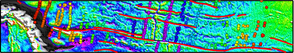

The Global Seafloor Fabric and Magnetic Lineation Data Base Project
PIs: P. Wessel (SOEST, U of Hawaii) and R. D. Müller (U of Sydney)
Collaborators: D. T. Sandwell and S. C. Cande (Scripps Institution of Oceanography)
[Updated August 1, 2016]

What is this site?
This is the Global Seafloor Fabric and Magnetic Lineation Data Base Project,
funded by the US National Science Foundation.
Here you will find information on the project, what data are available,
and how you can contribute.
What is the Project?
Our goal is to serve as a repository for the traces of the world's fracture zones and the locations of
magnetic isochron picks; combined, these data form the foundation for plate tectonic
reconstructions. We also serve as repository for the specific picks selected for published plate motion models.
We seek to digitize all the world's seafloor fabric (in particular fracture zones) and add published magnetic picks and Hellinger input data files.
Unlike previous seafloor fabric compilations,
we are developing software that will track a lineation through the latest Sandwell and Smith
vertical gravity grids (VGG) assisted by guide points. It is these guide points that
are digitized and stored; continuous FZ and other traces are then obtained by running these
points through the tracking software and the VGG grid. As VGG data improve
so will the derived traces. See GSFML motivation for
a longer description of the project
Available Data Compilations
There are three types of related data compilations available. Please visit the relevant site:
- Evolving Seafloor Fabric Lineations Database.
- Published Magnetic Lineation Picks.
- Input Parameters for Published Relative Plate Motion Models.
Wish to contribute?
See GSFML Participation Instructions.
Current snapshot of digitized seafloor fabric and magnetic lineation picks
 For a large (~190 Mb) PDF image at the same resolution as the original VGG Mercator data set,
see GSFML_map.pdf.
For a large (~190 Mb) PDF image at the same resolution as the original VGG Mercator data set,
see GSFML_map.pdf.
References
- Matthews, K. J., R. D. Müller, P. Wessel, and J. M. Whittaker (2011),
The tectonic fabric of the ocean basins,
J. Geophys. Res., 116 (B12),
doi:10.1029/2011JB008413.
[The data set analyzed in this paper is a snapshot of the database as of 2011 and has been preserved on the
EarthByte ftp site].
- Seton, M., J. Whittaker, P. Wessel, R. D. Müller, C. DeMets, S. Merkouriev, S. Cande,
C. Gaina, G. Eagles, R. Granot, J. Stock, N. Wright, and S. Williams (2014),
Community infrastructure and repository for marine magnetic identifications,
Geochemistry, Geophysics, Geosystems, 5(4), 1629-1641,
doi:10.1002/2013GC005176
- Wessel, P., K. J. Matthews, R. D. Müller, A. Mazzoni, J. M. Whittaker,
R. Myhill, and M. T. Chandler (2015), Semiautomatic fracture zone tracking,
Geochemistry, Geophysics, Geosystems, 16(7), 2462-2472,
doi:10.1002/2015GC005853.
This article discusses the Fracture zone tracking software which is available as a GMT supplement (5.2 or later).
Maintained by Paul Wessel